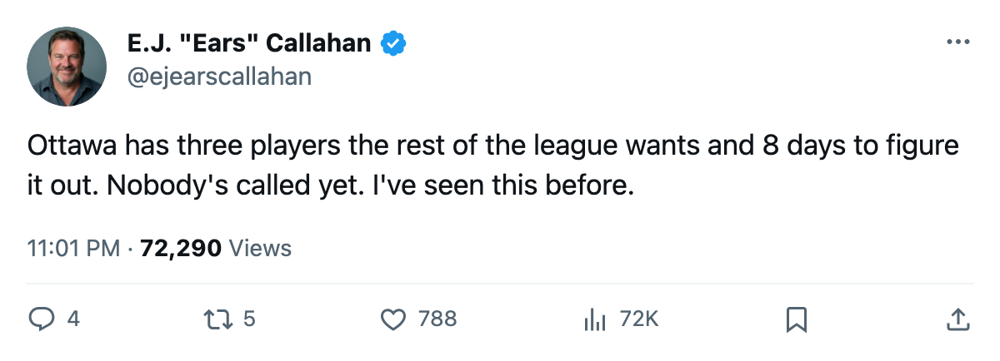
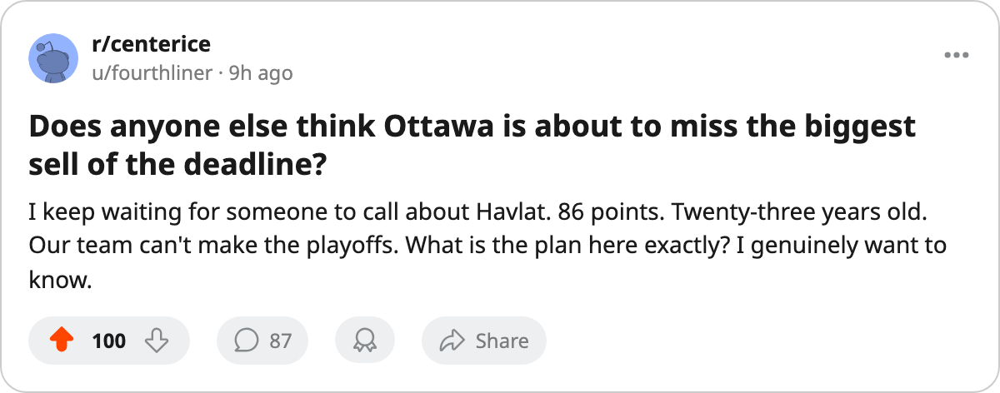

RUMOR METER: Ottawa Carries 3 of the Top 30 Expirings. 7 Points Out. 8 Days. 🔥🔥
Martin Havlat has 86 points on $900,000. Patrick Lalime and Zdeno Chara walk with him in July. Nobody has called.
 E.J. "Ears" CallahanInsider · The Hot Stove
E.J. "Ears" CallahanInsider · The Hot Stove

Ottawa carries 3 top-30 expirings, 7 points out, and silence

The piece
 Martin Havlat88 has 86 points in 69 games for a club that is 7 points out of a playoff spot. He is 23. His contract pays him $0.90M and it dies on July 1. The trade deadline is what the calendar has as 8 days away, and
Martin Havlat88 has 86 points in 69 games for a club that is 7 points out of a playoff spot. He is 23. His contract pays him $0.90M and it dies on July 1. The trade deadline is what the calendar has as 8 days away, and  Ottawa Senators has not moved.
Ottawa Senators has not moved.
The desk hears nothing. A league source says the Sabres' phone hasn't rung on any of the three names in the top 30.
The trio nobody is calling
| Player | Pos | Age | Overall | GP | Points | Salary | Morale |
|---|---|---|---|---|---|---|---|
| Martin Havlat | LW | 23 | 88 | 69 | 86 | $0.90M | 92 |
 Patrick Lalime90 Patrick Lalime90 | G | 30 | 86 | 59 | — | $1.90M | 85 |
 Zdeno Chara84 Zdeno Chara84 | D | 27 | 84 | 69 | 62 | $1.70M | 92 |
Havlat leads the three in production and in urgency. A 23-year-old wing with 86 points on $0.90M is the cheapest top-six piece in the league. His 88 overall sits 9th in the Bureau's contract-year class. His morale is 92; he isn't playing next year unless Ottawa re-signs him or moves him now.
The math Ottawa can't argue with
OTT sits at 65 points in 69 games. ATL holds 8th in the East at 72 with 67 games played. Ottawa needs 7 points just to pull even, and  Atlanta Thrashers has 15 games left. Even a collapse by Atlanta doesn't hand this club a berth without Ottawa winning something like 7 of 13. The record says 65 points is a rental shop, not a playoff run.
Atlanta Thrashers has 15 games left. Even a collapse by Atlanta doesn't hand this club a berth without Ottawa winning something like 7 of 13. The record says 65 points is a rental shop, not a playoff run.
Patrick Lalime started 59 games. His overall is 86 on a $1.90M deal with one year left. Goaltenders on expiring contracts fetch mid-round picks in a thin market, not firsts. But Chara is different. A 6-foot-9, 84-overall defenseman at 27, 62 points, $1.70M. The Norris Trophy winner last season was Svehla, and Chara was the runner-up on a bad team. Contenders with a hole at the top pair see him and think about a Cup run.
The buyer profile
Who needs a 23-year-old with 86 points and no cap hit? Every club in the top 8 in the West carries questions at wing.  Nashville Predators (90 points, W3) could use a top-six left wing beside its centres.
Nashville Predators (90 points, W3) could use a top-six left wing beside its centres.  Colorado Avalanche (91 points, W2) scored 263 but gave up 210 and could use a second-line presence without a $5M cap hit.
Colorado Avalanche (91 points, W2) scored 263 but gave up 210 and could use a second-line presence without a $5M cap hit.  Edmonton Oilers (88 points, L2) sits in a contract-year club whose GM told The Tunnel this week he isn't selling anything, but the desk hears no one has called about Havlat specifically.
Edmonton Oilers (88 points, L2) sits in a contract-year club whose GM told The Tunnel this week he isn't selling anything, but the desk hears no one has called about Havlat specifically.
Ottawa's payroll is $42.80M and its profit is $31.43M. The club doesn't need the money. It needs picks, and it needs them before the deadline because after March 19 the return drops through the floor. A player on the trade block the week before the deadline fetches a second-rounder. A player available in July fetches a phone call from an agent saying he wants to stay home.
The desk has been wrong on this pattern before. The 25% confirmed rate sits on the record and the desk owns it. But the setup is the same as Chicago, same as Atlanta, same as San Jose: a club with real talent on expiring deals, a club mathematically done, and silence on the phones. The desk rates this two flames because the silence is the story.
CONFIRMED vs. DENIED: Ottawa moves one of these three before the deadline. The desk says yes.

